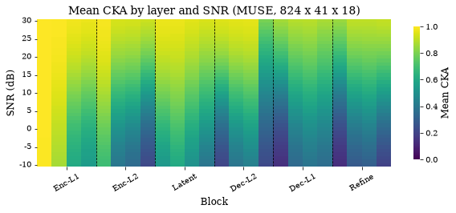
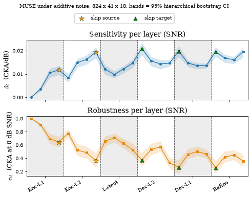
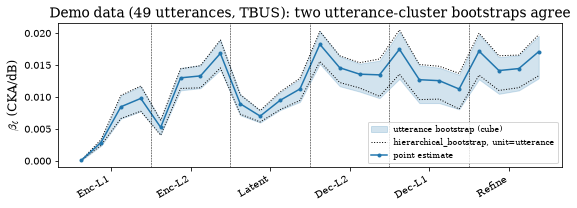
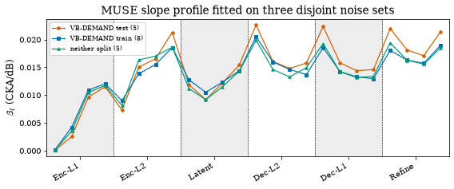

The robustness–sensitivity profile under noise#
How does each layer of MUSE respond to additive noise? This chapter builds the paper’s noise-axis profile at full scale, 824 utterances × 41 integer SNRs × 18 DEMAND noises: first the mean CKA of every probed layer across the SNR sweep as a heatmap (Fig. 2), then the per-layer linear fit α + β s that compresses each curve into a robustness intercept and a sensitivity slope, with the hierarchical utterance × noise bootstrap bands the paper draws around them (Fig. 3). The second half asks two questions about that profile: why the confidence intervals have to resample the sampling units of the design rather than the points of the mean curve, and whether the profile depends on which DEMAND recordings were used to probe it.
Runtime: under 90 seconds on any device.
import sys
from pathlib import Path
REPO = Path.cwd().resolve()
while REPO.name != "SE-Probe" and REPO.parent != REPO:
REPO = REPO.parent
if str(REPO) not in sys.path:
sys.path.insert(0, str(REPO))
def _rel(p):
"""Repo-relative path for display (absolute only if outside the repo)."""
try:
return p.relative_to(REPO)
except ValueError:
return p
from se_probe.device import device_info, get_device
from se_probe.plotting import MODEL_COLORS, apply_paper_rcparams
apply_paper_rcparams()
DEVICE = get_device()
print(device_info(DEVICE))
import numpy as np
import pandas as pd
DATA_DIR = REPO / ("results_df" if (REPO / "results_df").exists() else "results_demo")
TABLES = REPO / "results_tables"
print(f"Using data from: {_rel(DATA_DIR)}")
print(f"Paper tables from: {_rel(TABLES)}")
Detected device: cpu
Using data from: results_demo
Paper tables from: results_tables
Mean CKA over layer and SNR#
cka_heatmap_values_raw_jobB18.csv holds the mean CKA of every hooked layer at every integer SNR, each cell averaged over the 824 utterances and 18 noises. We keep the 24 norm1 layers the paper probes, one per transformer layer, ordered by architectural depth with se_probe.layers.probed_layers. Columns are layers (encoder → latent → decoder → refinement), rows are SNR. Yellow marks clean-like representations, dark marks strongly perturbed ones: the early encoder is a near-uniform high-CKA band, and an SNR gradient strengthens toward the decoder and refinement stages.
import matplotlib.pyplot as plt
import seaborn as sns
from se_probe.layers import layout, probed_layers, short_labels
grid = pd.read_csv(TABLES / "snr/cka_heatmap_values_raw_jobB18.csv")
grid = grid[grid["layer"].str.endswith(".norm1")]
assert (grid["count"] == 824 * 18).all(), "every cell must average 824 utterances x 18 noises"
heat = grid.pivot(index="layer", columns="snr", values="mean")
norm1_layers = probed_layers("muse", heat.index)
heat = heat.loc[norm1_layers]
print(f"{len(norm1_layers)} probed layers x {heat.shape[1]} SNRs, each cell the mean of {824 * 18:,} CKA values")
print(f"first encoder layer: {heat.iloc[0].min():.3f} -> {heat.iloc[0].max():.3f} over the sweep; "
f"first refinement layer: {heat.iloc[20].min():.3f} -> {heat.iloc[20].max():.3f}")
lay = layout("muse")
fig, ax = plt.subplots(figsize=(8.5, 3.8))
sns.heatmap(heat.T, cmap="viridis", vmin=0, vmax=1, ax=ax,
cbar_kws={"label": "Mean CKA", "shrink": 0.9})
ax.invert_yaxis()
ax.set_xlabel("Block")
ax.set_ylabel("SNR (dB)")
ax.set_title("Mean CKA by layer and SNR (MUSE, 824 x 41 x 18)")
ax.set_xticks([t + 0.5 for t in lay["ticks"]])
ax.set_xticklabels(lay["ticklabels"], rotation=30, ha="center")
ax.set_yticks(np.arange(0, 41, 5) + 0.5)
ax.set_yticklabels([int(s) for s in heat.columns[::5]], rotation=0)
for s in lay["seps"]:
ax.axvline(x=s + 0.5, color="k", linestyle="--", linewidth=0.8)
plt.tight_layout();
24 probed layers x 41 SNRs, each cell the mean of 14,832 CKA values
first encoder layer: 0.995 -> 1.000 over the sweep; first refinement layer: 0.130 -> 0.847

The per-layer linear fit and its hierarchical intervals#
Each layer’s curve in the heatmap is summarised by a straight line, CKA ≈ αℓ + βℓ s: αℓ is the CKA extrapolated to 0 dB (robustness) and βℓ the change per dB (sensitivity). fits_muse_snr_jobB.csv carries the OLS point estimates of the mean curve; muse_profile_values_18_cluster.csv carries the same estimates with their 95% percentile intervals from a utterance × noise bootstrap (1,000 replicates, seed 0). The two files must agree on the point estimates to machine precision, every one of the 24 fits reaches R² ≥ 0.96, and the sensitivity peaks at the first decoder-level-2 layer.
fits = pd.read_csv(TABLES / "snr/fits_muse_snr_jobB.csv")
cis = pd.read_csv(TABLES / "snr/muse_profile_values_18_cluster.csv")
assert list(fits["layer"]) == probed_layers("muse", fits["layer"]) == list(cis["layer"]), "layer order is not architectural depth"
assert np.allclose(fits["alpha"], cis["alpha"], atol=1e-12) and np.allclose(fits["beta"], cis["beta"], atol=1e-12)
prof = fits.merge(cis.drop(columns=["alpha", "beta", "r2"]), on="layer")
prof["label"] = short_labels("muse", prof["layer"])
peak = prof.loc[prof["beta"].idxmax(), "label"]
print(f"intercept range: {prof['alpha'].max():.3f} (first encoder layer) -> {prof['alpha'].min():.3f} (first refinement layer) (paper: 0.99 -> 0.25; the paper truncates 0.997 to 0.99)")
print(f"peak sensitivity layer: {peak} (paper: Dec-L2.0)")
print(f"min R^2 over the 24 fits: {prof['r2'].min():.4f} (paper: >= 0.96)")
assert peak == "Dec-L2.0" and prof["r2"].min() >= 0.96
assert prof["alpha"].max() > 0.99 and abs(prof["alpha"].min() - 0.25) < 0.01 # the paper rounds to two decimals
prof[["label", "alpha", "alpha_ci_lo", "alpha_ci_hi", "beta", "beta_ci_lo", "beta_ci_hi", "r2"]].round(4).head(8)
intercept range: 0.997 (first encoder layer) -> 0.255 (first refinement layer) (paper: 0.99 -> 0.25; the paper truncates 0.997 to 0.99)
peak sensitivity layer: Dec-L2.0 (paper: Dec-L2.0)
min R^2 over the 24 fits: 0.9608 (paper: >= 0.96)
| label | alpha | alpha_ci_lo | alpha_ci_hi | beta | beta_ci_lo | beta_ci_hi | r2 | |
|---|---|---|---|---|---|---|---|---|
| 0 | Enc-L1.0 | 0.9966 | 0.9952 | 0.9976 | 0.0001 | 0.0001 | 0.0002 | 0.9608 |
| 1 | Enc-L1.1 | 0.9072 | 0.8740 | 0.9362 | 0.0036 | 0.0026 | 0.0047 | 0.9691 |
| 2 | Enc-L1.2 | 0.6961 | 0.6182 | 0.7692 | 0.0105 | 0.0085 | 0.0123 | 0.9903 |
| 3 | Enc-L1.3 | 0.6449 | 0.5671 | 0.7263 | 0.0118 | 0.0096 | 0.0135 | 0.9923 |
| 4 | Enc-L2.0 | 0.7744 | 0.7070 | 0.8362 | 0.0083 | 0.0065 | 0.0101 | 0.9806 |
| 5 | Enc-L2.1 | 0.5234 | 0.4388 | 0.6159 | 0.0149 | 0.0128 | 0.0166 | 0.9948 |
| 6 | Enc-L2.2 | 0.4843 | 0.3956 | 0.5763 | 0.0162 | 0.0141 | 0.0180 | 0.9938 |
| 7 | Enc-L2.3 | 0.3632 | 0.2668 | 0.4810 | 0.0193 | 0.0167 | 0.0214 | 0.9929 |
import matplotlib.pyplot as plt
from se_probe.plotting import profile_panel_pair
fig, (ax1, ax2) = plt.subplots(2, 1, figsize=(7, 5), sharex=True)
profile_panel_pair(ax1, ax2, prof, layout("muse"), axis_tag="SNR",
beta_ci=("beta_ci_lo", "beta_ci_hi"), alpha_ci=("alpha_ci_lo", "alpha_ci_hi"))
handles, labels = ax1.get_legend_handles_labels()
fig.legend(handles, labels, loc="upper center", ncol=2, frameon=True, bbox_to_anchor=(0.5, 1.02))
fig.suptitle("MUSE under additive noise, 824 x 41 x 18, bands = 95% hierarchical bootstrap CI", y=1.06, fontsize=10)
plt.tight_layout();

Why the sampling unit, not the curve, must be resampled#
A row of the results table is one (utterance, noise, SNR, layer) measurement. Utterances are crossed with every noise type and nested in speakers, so rows are far from independent. Resampling the 41 points of the mean curve only propagates the residual scatter about the fitted line, which is negligible when R² is above 0.96, and silently drops the dominant variance components (utterance-to-utterance and noise-to-noise). The paper therefore resamples whole utterances and whole noise types.
The demo parquet holds one noise type (TBUS) at five SNRs for about fifty utterances, so a two-way bootstrap is not possible here; the utterance-cluster bootstrap is. Two implementations ship in the package: se_probe.profiles.utterance_bootstrap (resamples a layers × utterances × levels cube) and the general se_probe.bootstrap.hierarchical_bootstrap (weight-based cluster resampling of any statistic). Their random streams differ, so the agreement to check is the interval width, up to Monte-Carlo error.
from se_probe.bootstrap import hierarchical_bootstrap, ols_alpha_beta
from se_probe.profiles import build_cube, utterance_bootstrap
muse_path = DATA_DIR / ("snr/cka_snr_muse.parquet" if (DATA_DIR / "snr").exists() else "cka_snr_muse_demo.parquet")
demo = pd.read_parquet(muse_path, columns=["clean_idx", "snr", "layer", "CKA", "noise_name"])
demo = demo[demo["noise_name"] == "TBUS"]
layers = probed_layers("muse", demo["layer"].unique())
sub = demo[demo["layer"].isin(layers)].reset_index(drop=True)
print(f"{len(sub):,} rows | {sub['clean_idx'].nunique()} utterances | SNRs {[float(s) for s in sorted(sub['snr'].unique())]} | {len(layers)} layers")
# implementation 1: cube resampling
cube, units, levels = build_cube(sub, layers, level_col="snr", unit_col="clean_idx")
ub = utterance_bootstrap(cube, levels, n_boot=300, seed=0, stats_keys=("alpha", "beta"))
width_cube = ub["beta_hi"] - ub["beta_lo"]
# implementation 2: weighted statistic under the general hierarchical bootstrap
layer_code = sub["layer"].map({L: i for i, L in enumerate(layers)}).to_numpy()
snr_vals = np.sort(sub["snr"].unique()).astype(float)
snr_code = sub["snr"].astype(float).map({s: i for i, s in enumerate(snr_vals)}).to_numpy()
key = layer_code * len(snr_vals) + snr_code
cka_vals = sub["CKA"].to_numpy()
K = len(layers) * len(snr_vals)
def beta_statistic(indices, weights):
num = np.bincount(key[indices], weights=weights * cka_vals[indices], minlength=K)
den = np.bincount(key[indices], weights=weights, minlength=K)
curves = (num / den).reshape(len(layers), len(snr_vals))
_, beta = ols_alpha_beta(curves, snr_vals)
return beta
hb = hierarchical_bootstrap(beta_statistic, {"utterance": sub["clean_idx"].to_numpy()},
unit="utterance", n_boot=300, seed=0)
width_hb = hb.ci_high - hb.ci_low
print(hb.describe())
assert np.allclose(hb.estimate, ub["beta"], atol=1e-10), "point estimates differ between implementations"
ratio = np.median(width_hb / width_cube)
print(f"median width ratio (general / cube implementation) = {ratio:.3f} (1.0 up to Monte-Carlo error)")
assert 0.75 < ratio < 1.33
cmp = pd.DataFrame({"label": short_labels("muse", layers), "beta": ub["beta"],
"width_cube": width_cube, "width_hierarchical": width_hb}).round(5)
cmp.head(8)
1,200 rows | 49 utterances | SNRs [-10.0, 0.0, 10.0, 20.0, 30.0] | 24 layers
95% percentile interval from 300 replicates; sampling unit=utterance (n=49); nested levels resampled: utterance; nested levels carried whole: none; crossed margins resampled: none; strata held fixed: none; coarser levels held fixed (no variance propagated): none
median width ratio (general / cube implementation) = 0.943 (1.0 up to Monte-Carlo error)
| label | beta | width_cube | width_hierarchical | |
|---|---|---|---|---|
| 0 | Enc-L1.0 | 0.00005 | 0.00003 | 0.00004 |
| 1 | Enc-L1.1 | 0.00286 | 0.00095 | 0.00088 |
| 2 | Enc-L1.2 | 0.00846 | 0.00364 | 0.00362 |
| 3 | Enc-L1.3 | 0.00977 | 0.00393 | 0.00395 |
| 4 | Enc-L2.0 | 0.00524 | 0.00229 | 0.00235 |
| 5 | Enc-L2.1 | 0.01299 | 0.00351 | 0.00307 |
| 6 | Enc-L2.2 | 0.01329 | 0.00359 | 0.00346 |
| 7 | Enc-L2.3 | 0.01682 | 0.00474 | 0.00437 |
fig, ax = plt.subplots(figsize=(8, 3))
x = np.arange(len(layers))
ax.fill_between(x, ub["beta_lo"], ub["beta_hi"], color=MODEL_COLORS["muse"], alpha=0.2, label="utterance bootstrap (cube)")
ax.plot(x, hb.ci_low, ":", color="k", lw=1, label="hierarchical_bootstrap, unit=utterance")
ax.plot(x, hb.ci_high, ":", color="k", lw=1)
ax.plot(x, ub["beta"], "o-", color=MODEL_COLORS["muse"], ms=3, label="point estimate")
ax.set_ylabel(r"$\beta_\ell$ (CKA/dB)")
ax.set_title(f"Demo data ({sub['clean_idx'].nunique()} utterances, TBUS): two utterance-cluster bootstraps agree")
lay = layout("muse")
ax.set_xticks(lay["ticks"])
ax.set_xticklabels(lay["ticklabels"], rotation=30, ha="right")
for s in lay["seps"]:
ax.axvline(s, color="k", ls="--", lw=0.5)
ax.legend(loc="best", fontsize=8)
plt.tight_layout();

Re-running the published draw mechanism#
The intervals in muse_profile_values_18_cluster.csv come from one numpy.random.default_rng(0) threaded through every model and every hooked layer (72 for MUSE) in sorted order, drawing utterances with rng.choice before noise types. two_way_cluster_bootstrap(seed=0) uses the same draw mechanism, but an exact, bit-identical replay needs the full 824-utterance table with every hooked layer passed in sorted order, which scripts/analyze_snr_profiles.py --bootstrap now does. The cell below passes only a few probed layers, so its random stream diverges from the published one after the first layer: the intervals it returns are statistically equivalent to the shipped ones (same resampling design, same number of replicates), not bit-identical, and the printed discrepancy is Monte-Carlo error rather than a bug. On a clone without results_df/ the cell only reports that the branch is skipped.
from se_probe.profiles import two_way_cluster_bootstrap
full = REPO / "results_df/snr/cka_snr_muse.parquet"
if full.exists():
df_full = pd.read_parquet(full, columns=["clean_idx", "snr", "layer", "CKA", "noise_name"])
n_noise = df_full["noise_name"].nunique()
some = sorted(layers)[:3] # same draw mechanism; a bit-identical replay needs all 72 hooked layers in sorted() order
rep = two_way_cluster_bootstrap(df_full, some, level_col="snr", cluster_col="noise_name", n_boot=1000, seed=0)
ref = cis.set_index("layer").loc[rep["layer"]]
print(f"{n_noise} noise types; max |delta beta CI| vs shipped (Monte-Carlo error, not an exact replay): "
f"{np.abs(rep[['beta_ci_lo', 'beta_ci_hi']].to_numpy() - ref[['beta_ci_lo', 'beta_ci_hi']].to_numpy()).max():.2e}")
rep
else:
print("results_df/snr/cka_snr_muse.parquet not present: full-table re-run skipped (python scripts/setup.py --full-data fetches it).")
results_df/snr/cka_snr_muse.parquet not present: full-table re-run skipped (python scripts/setup.py --full-data fetches it).
Noise-set independence#
Is the profile driven by the choice of probing noise? The eighteen DEMAND recordings divide, by their role in VoiceBank-DEMAND, into the five that form its test split (out of distribution for the pretrained MUSE), the eight that form its training split, and the five that enter neither. The paper fits the slope profile independently on these subsets over the same 824 utterances and 41 SNR levels and finds that the slopes agree at r = 0.9812 and ρ = 0.9757 with the same peak layer, and that the small difference in mean slope does not track familiarity (Sec. “The Robustness-Sensitivity Tradeoff Under Noise”, last paragraph). The numbers below come from the per-noise slope table with se_probe.profiles.noise_set_independence.
from se_probe.layers import (
DEMAND_NEITHER_SPLIT,
HELD_OUT_NOISES_OLD,
VOICEBANK_DEMAND_TEST_NOISES,
VOICEBANK_DEMAND_TRAIN_NOISES,
layout,
probed_layers,
short_labels,
)
from se_probe.profiles import noise_set_independence
per_noise = pd.read_csv(TABLES / "snr/per_noise_beta_muse.csv", index_col=0)
per_noise = per_noise.loc[probed_layers("muse", per_noise.index)]
assert per_noise.shape == (24, 18), per_noise.shape
assert set(VOICEBANK_DEMAND_TEST_NOISES + VOICEBANK_DEMAND_TRAIN_NOISES + DEMAND_NEITHER_SPLIT) == set(per_noise.columns)
print("test five :", VOICEBANK_DEMAND_TEST_NOISES)
print("train eight:", VOICEBANK_DEMAND_TRAIN_NOISES)
print("neither :", DEMAND_NEITHER_SPLIT)
test five : ['TBUS', 'SCAFE', 'DLIVING', 'OOFFICE', 'SPSQUARE']
train eight: ['DKITCHEN', 'OMEETING', 'PCAFETER', 'PRESTO', 'PSTATION', 'TCAR', 'TMETRO', 'STRAFFIC']
neither : ['DWASHING', 'NFIELD', 'NPARK', 'NRIVER', 'OHALLWAY']
Test split versus training split#
The profile of a noise set is the mean of its per-noise slopes, which equals fitting the mean curve pooled over that set (the fit is linear in the curve).
res = noise_set_independence(per_noise, VOICEBANK_DEMAND_TEST_NOISES, VOICEBANK_DEMAND_TRAIN_NOISES)
labels = dict(zip(per_noise.index, short_labels("muse", per_noise.index)))
print(f"held-out five vs training eight: r = {res['pearson_r']:.4f} (paper 0.9812), rho = {res['spearman_rho']:.4f} (paper 0.9757)")
print(f"peak layer: {labels[res['peak_layer_a']]} vs {labels[res['peak_layer_b']]} (paper: both Dec-L2.0)")
print(f"mean beta: held-out {res['mean_beta_a']:.4f} (paper 0.0145), training {res['mean_beta_b']:.4f} (paper 0.0136)")
assert abs(res["pearson_r"] - 0.9812) < 5e-5 and abs(res["spearman_rho"] - 0.9757) < 5e-5
assert labels[res["peak_layer_a"]] == labels[res["peak_layer_b"]] == "Dec-L2.0"
assert abs(res["mean_beta_a"] - 0.0145) < 5e-5 and abs(res["mean_beta_b"] - 0.0136) < 5e-5
neither = noise_set_independence(per_noise, VOICEBANK_DEMAND_TEST_NOISES, DEMAND_NEITHER_SPLIT)
print(f"the five in neither split: mean beta {neither['mean_beta_b']:.4f} (paper 0.0135), r vs held-out five = {neither['pearson_r']:.4f}")
assert abs(neither["mean_beta_b"] - 0.0135) < 5e-5
held-out five vs training eight: r = 0.9812 (paper 0.9812), rho = 0.9757 (paper 0.9757)
peak layer: Dec-L2.0 vs Dec-L2.0 (paper: both Dec-L2.0)
mean beta: held-out 0.0145 (paper 0.0145), training 0.0136 (paper 0.0136)
the five in neither split: mean beta 0.0135 (paper 0.0135), r vs held-out five = 0.9860
Cross-check against the cluster computation#
IIIA_independence_18.csv was produced on the cluster for two other contrasts, the old held-out five (with PCAFETER) against the remaining twelve, and the corrected five against the remaining thirteen. The same function reproduces both rows.
ref = pd.read_csv(TABLES / "snr/IIIA_independence_18.csv").set_index("contrast")
all18 = list(per_noise.columns)
old_rest = [n for n in all18 if n not in HELD_OUT_NOISES_OLD and n != "SCAFE"]
new_rest = [n for n in all18 if n not in VOICEBANK_DEMAND_TEST_NOISES]
for tag, held, rest in [("old5_vs_12", HELD_OUT_NOISES_OLD, old_rest), ("new5_vs_13", VOICEBANK_DEMAND_TEST_NOISES, new_rest)]:
r = noise_set_independence(per_noise, held, rest)
print(f"{tag}: r = {r['pearson_r']:.4f} (cluster {ref.loc[tag, 'pearson_r']:.4f}), rho = {r['spearman_rho']:.4f} (cluster {ref.loc[tag, 'spearman_rho']:.4f})")
assert abs(r["pearson_r"] - ref.loc[tag, "pearson_r"]) < 1e-9
assert abs(r["spearman_rho"] - ref.loc[tag, "spearman_rho"]) < 1e-9
assert abs(r["mean_beta_a"] - ref.loc[tag, "mean_beta_held"]) < 1e-12
old5_vs_12: r = 0.9904 (cluster 0.9904), rho = 0.9896 (cluster 0.9896)
new5_vs_13: r = 0.9880 (cluster 0.9880), rho = 0.9870 (cluster 0.9870)
The three profiles#
The slope profile fitted on each disjoint noise set, over the same depth axis as the figures above. The three curves share their shape and their peak; the held-out five sit marginally above the other two across the decoder, which is the small mean-slope difference the paper reports.
import matplotlib.pyplot as plt
from se_probe.plotting import OKABE_ITO, depth_axis
lay = layout("muse")
x = np.arange(24)
fig, ax = plt.subplots(figsize=(8, 3.4))
depth_axis(ax, lay)
for name, cols, color, mk in [("VB-DEMAND test (5)", VOICEBANK_DEMAND_TEST_NOISES, OKABE_ITO["vermillion"], "o"),
("VB-DEMAND train (8)", VOICEBANK_DEMAND_TRAIN_NOISES, OKABE_ITO["blue"], "s"),
("neither split (5)", DEMAND_NEITHER_SPLIT, OKABE_ITO["green"], "^")]:
ax.plot(x, per_noise[cols].mean(axis=1), marker=mk, ms=3.5, lw=1.2, color=color, label=name)
ax.set_ylabel(r"$\beta_\ell$ (CKA/dB)")
ax.set_title("MUSE slope profile fitted on three disjoint noise sets")
ax.legend(loc="upper left", fontsize=8)
plt.tight_layout();
